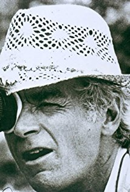
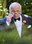

Rocky Balboa is een eens veelbelovende en goedaardige bokser van Italiaanse afkomst uit Philadelphia, wiens carrière nooit van de grond is gekomen en tegenwoordig een uitzichtloos leven leidt. Om wat geld te kunnen verdienen haalt hij niet uitbetaalde schulden op voor de woekeraar Gazzo. Ondertussen is de heersende en onverslagen zwaargewichtkampioen Apollo Creed op zoek naar een tegenstander voor de belangrijke wedstrijd op 1 januari 1976, nieuwjaarsdag. Tijdens een bezoek aan Philadelphia verzint zijn manager een publiciteitsstunt: Creed zal het opnemen tegen een lokale onbekende bokser, die hierdoor voor een moment in zijn leven in het middelpunt van de aandacht staat en een kans krijgt op de titel, maar waarschijnlijk ook gemakkelijk te verslaan is. De keuze valt op Rocky, de "Italian Stallion".
Voor Creed is deze wedstrijd slechts een spektakel, en ook Rocky schat in het begin zijn kansen niet hoog in. Zelfs zijn voormalige trainer Mickey, die eens in hem een topbokser zag als hij maar genoeg had getraind, ziet weinig in de kansen van zijn pupil. Rocky wordt echter verliefd op de zeer verlegen Adrian, de zus van zijn beste vriend Paulie die werkt in een plaatselijke dierenwinkel, en ontwikkelt vervolgens een nieuwe wil om zichzelf te bewijzen. Misschien kan hij Creed niet verslaan, maar hij zal proberen alle vijftien rondes in de wedstrijd te blijven. In een beroemd geworden scène slaat hij aan het trainen, waarbij hij onder andere de trappen van het Philadelphia Museum of Art oprent en een bevroren karkas gebruikt als bokszak in de koelcel van de vleesfabriek waar Paulie werkt. Deze montagesequentie wordt ondersteund door het nummer "Gonna Fly Now".
De wedstrijd wordt gehouden in de sporthal van Philadelphia, het Spectrum. Creed ontdekt dat hij zijn tegenstander heeft onderschat als deze hem in de eerste ronde al neerslaat, terwijl hij nog nooit in zijn carrière onderuit is gehaald. Wat volgt is een gevecht tot het einde, waarbij geen van beide mannen wil opgeven. De twee slaan elkaar tot bloedens toe. Rocky's ogen zwellen zelfs helemaal op en hij valt meerdere malen tegen de grond, maar hij weigert op te geven, en in de veertiende ronde weet hij zelfs een rib van Creed te breken met een slag. Uiteindelijk houdt Rocky het alle vijftien rondes lang vol in de ring. De twee vallen elkaar in de armen en Creed toont zijn respect voor zijn tegenstander.
De jury roept met een split decision Creed uit tot winnaar, maar Rocky toont zich een goed verliezer omdat hij zichzelf bewezen had aan iedereen die aan hem had getwijfeld, waaronder zijn trainer en zichzelf. Sportverslaggevers drommen zich na de wedstrijd om hem heen, maar hij roept enkel om Adrian, de liefde van zijn leven. Uiteindelijk vinden de twee elkaar, terwijl Creed wordt gehuldigd als de winnaar van de wedstrijd.
Speelduur: 2 u 2 m
Jaartal van publicatie: 1976

John G. Avildsen
Sylvester Stallone as Rocky Balboa
Talia Shire as Adrianna "Adrian" Pennino

Burt Young as Paulie